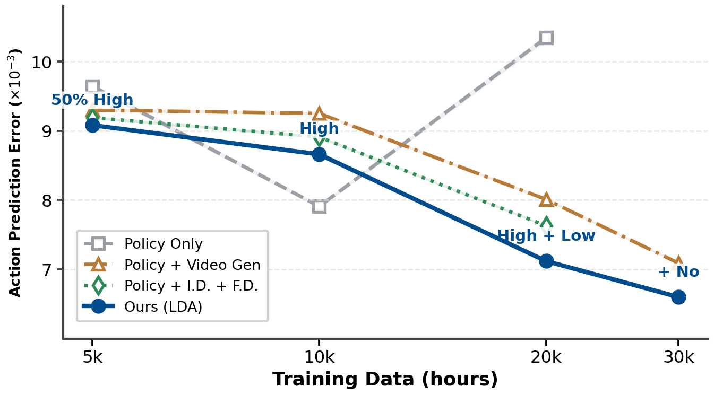
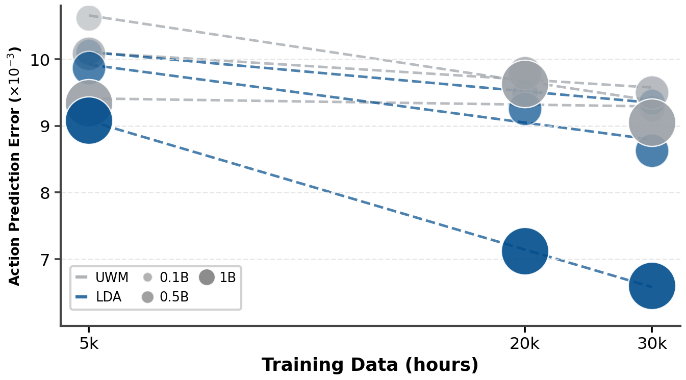
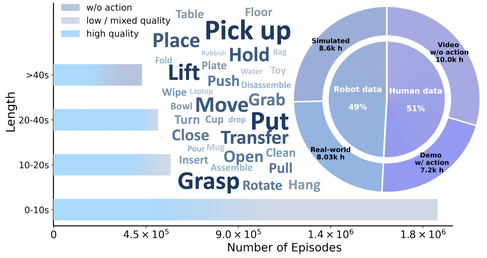
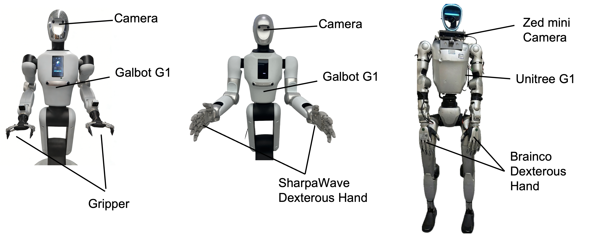

LDA -1B: Scaling Latent Dynamics Action Model via Universal Embodied Data Ingestion
Abstract
World Model in DINO Latent Space
LDA-1B operates in a structured DINO latent space, which avoids redundant pixel-space appearance modeling and enables the model to focus on task-relevant features. Each video below shows three columns: (Left) Original RGB video, (Middle) DINO feature visualization, and (Right) Model prediction. The DINO features capture semantically meaningful representations that facilitate dynamics learning across diverse embodied data.
Scaling Analysis
Data Scaling: Universal Embodied Data Ingestion
Action Prediction Error vs. Training Data Size. Our co-training framework (blue) achieves steady error reduction to 0.066 by effectively leveraging diverse data, including low-quality trajectories and actionless videos. The Policy Only baseline (grey) shows that naive behavior cloning is easily distracted by noise in heterogeneous datasets—error spikes sharply when lower-quality data is included. In contrast, our full co-training framework exhibits a steady downward trend, effectively converting potential noise into useful supervisory signals for improved generalization.
Model Scaling: Stable Large-Scale Training
Scaling Performance Across Model Sizes. LDA (blue) demonstrates consistent error reduction with increasing dataset size (5k→20k trajectories) and model parameters (0.1B→1B). Performance consistently improves with model size, showing that LDA-1B effectively consumes larger and more diverse datasets. In contrast, the UWM baseline (grey) saturates rapidly and degrades with additional data, highlighting that LDA-1B's latent dynamics representation combined with the mixed-frequency multi-modal transformer enables stable large-scale training.
Universal Model & Embodied Dataset
Model Architecture

Architecture of the Multi-Modal Diffusion Transformer (MM-DiT). The model jointly denoises action chunks and predicts future visual features within a unified diffusion framework. The diffusion timestep and task specification are fused into a unified conditioning signal, while VLM-generated conditioning tokens (from observations and language instructions) are integrated through cross-attention mechanisms. LDA-1B operates in a structured DINO latent space to avoid redundant pixel-space appearance modeling, enabling scalable dynamics learning over heterogeneous data.
EI-30k Dataset
Overview of EI-30K. The dataset contains ~30k hours of diverse human and robot interaction data: 8.03k hours real-world robot, 8.6k simulated, 7.2k human demonstrations with actions, and 10k actionless videos. It spans varying episode lengths and manipulation tasks. All subdatasets are quality-annotated and converted to the LeRobot format for unified observations, actions, and language.
Real-World Demonstrations
Galbot G1
Galbot G1 with SharpaWave Hand
Unitree G1 with BrainCo Hand
Robot Platforms
Real-world robot platforms used in our physical experiments. From left to right: (1) Galbot G1 equipped with a standard two-finger parallel gripper for basic grasping tasks; (2) Galbot G1 fitted with the SharpaWave dexterous hand (22 DoF) for fine manipulation; (3) Unitree G1 mounted with the BrainCo dexterous hand (10 DoF) and a Zed Mini camera. This multi-platform setup demonstrates the generalization capability of our LDA model across diverse robot morphologies and end-effectors.
BibTeX
@article{lyu2025lda1b,
title={LDA-1B: Scaling Latent Dynamics Action Model via Universal Embodied Data Ingestion},
author={Lyu, Jiangran and Liu, Kai and Zhang, Xuheng and Liao, Haoran and Feng, Yusen and Zhu, Wenxuan and Shen, Tingrui and Chen, Jiayi and Zhang, Jiazhao and Dong, Yifei and Wenbo, Cui and Qi, Senmao and Wang, Shuo and Zheng, Yixin and Yan, Mi and Shi, Xuesong and Li, Haoran and Zhao, Dongbin and Liu, Ming-Yu and Zhang, Zhizheng and Yi, Li and Wang, Yizhou and Wang, He},
journal={arXiv preprint},
year={2025}
}